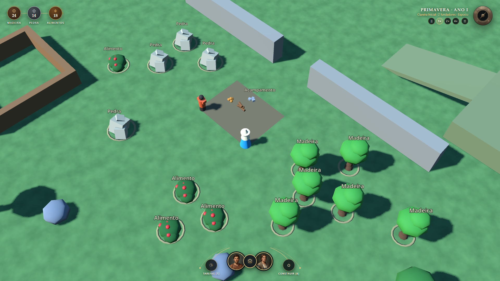
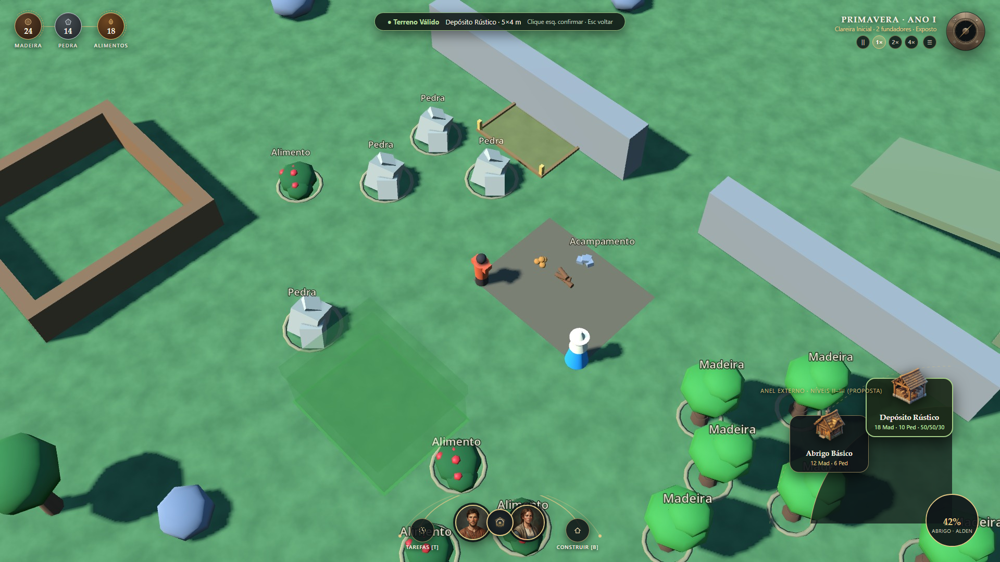
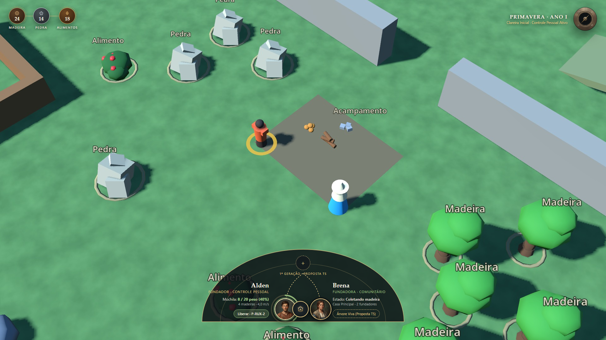
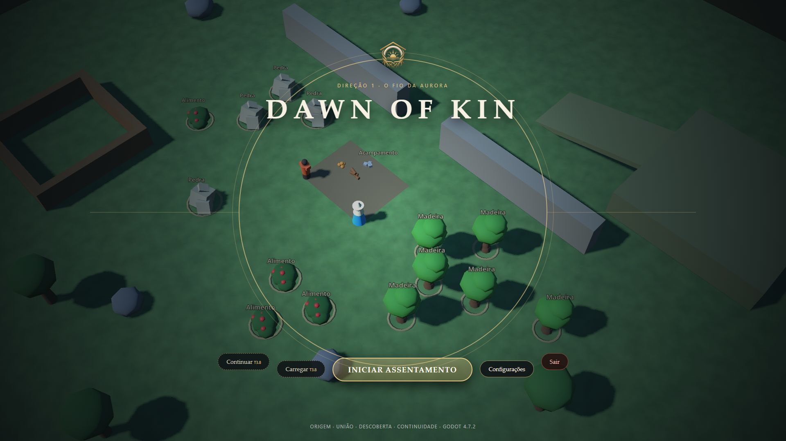
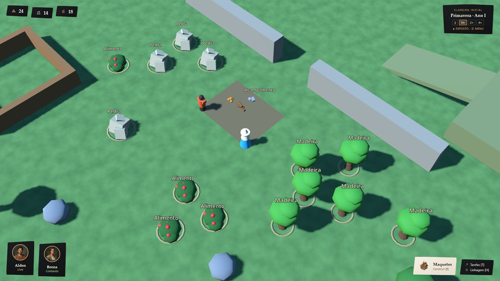
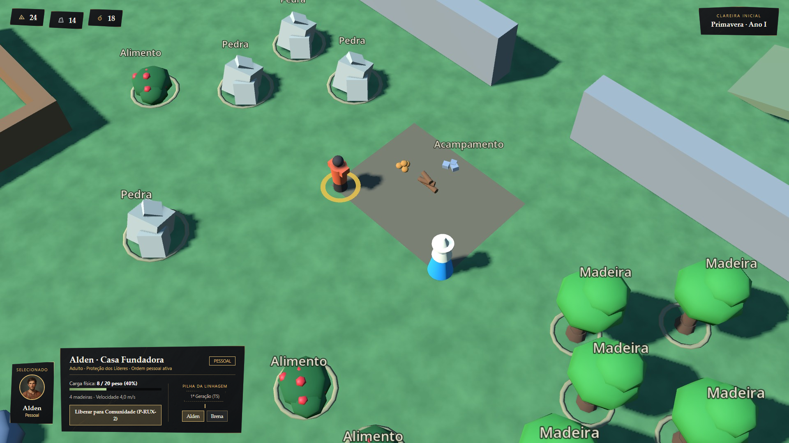
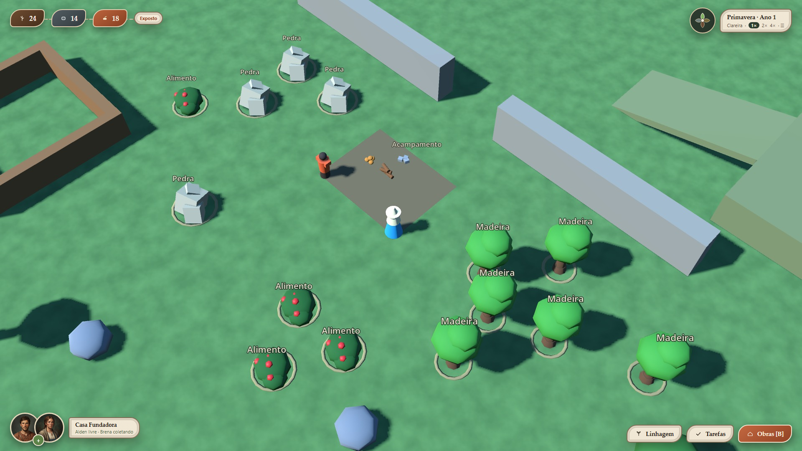
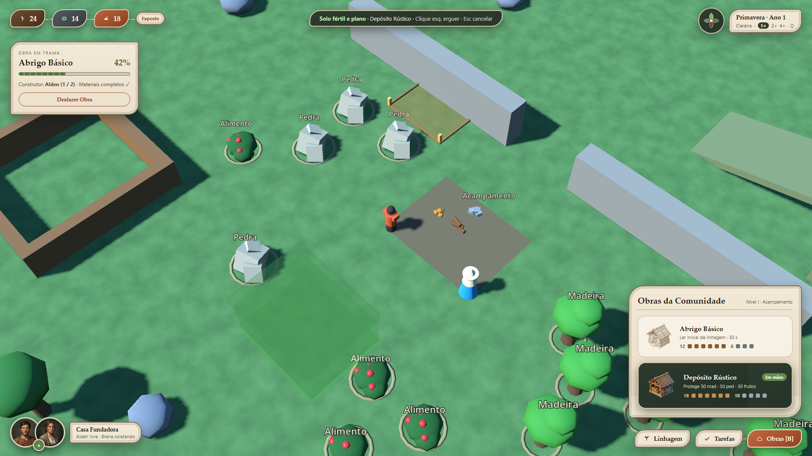
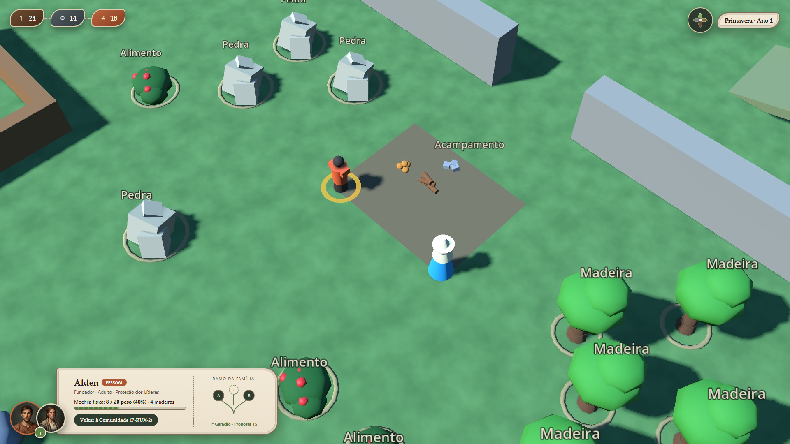
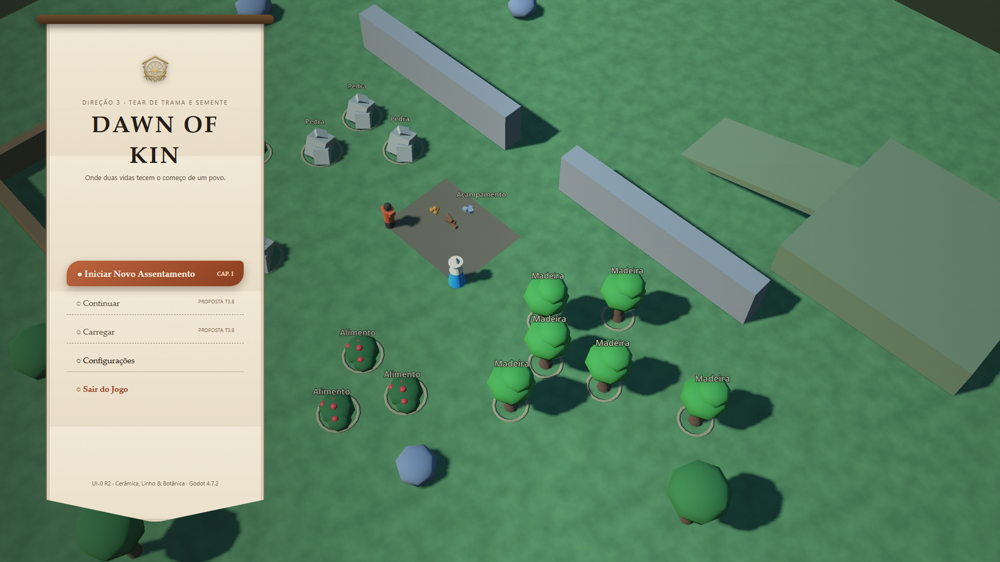

Direção 1 — O Fio da Aurora
Superação do Conceito C · Nó Orbital sem barra · Seixos · Astrolábio · Rosa de Construção




Identidade exclusiva: 94% do 3D livre em repouso; interface floresce em arcos orbitais ao clicar num fundador ou construir. Menu em Portal do Anel da Origem.
Direção 2 — Marcos de Pedra e Eclipse
Basalto vulcânico kintsugi · Estelas inclinadas · Placa Ema · Maquetes de Alabastro




Identidade exclusiva: Escultura monolítica assimétrica conectada ao arquipélago japonês e Luz × Sombra; estela se eleva na seleção e construção usa peças de alabastro.
Direção 3 — Tear de Trama e Semente
Cerâmica esmaltada · Linho cru tramado · Cordão de sementes · Ninho Familiar · 4 Pétalas




Identidade exclusiva: Rompe totalmente com estética dark/metal; celebra natureza vibrante, família em ninho sobreposto, fichas físicas de matéria e estandarte suspenso.